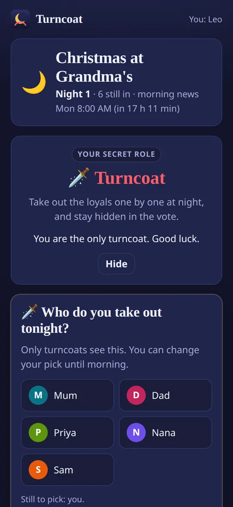
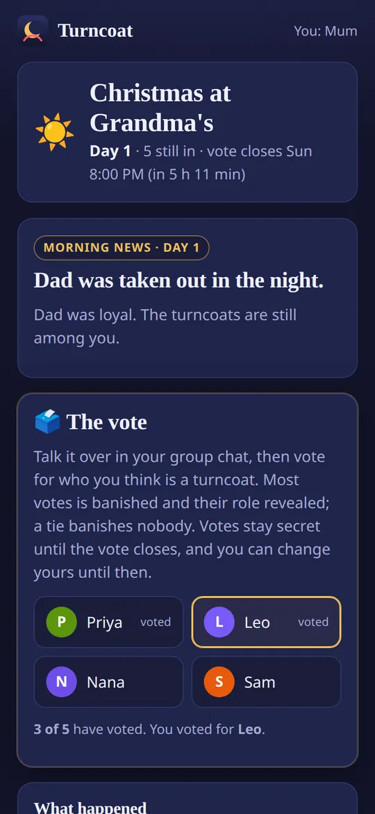
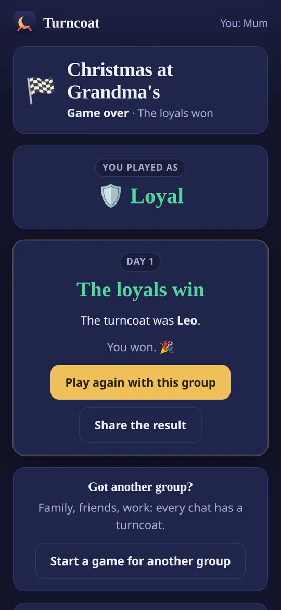

Someone in your group chat is a turncoat.
Turncoat is a free web game that runs a traitor game over a few days in WhatsApp, iMessage, Slack, Discord or any other chat. One link, nicknames, no app and no sign-up.
Secret roles
1 to 3 players are dealt the turncoat role. Roles stay on the server; your phone only gets your own.
Night and day
Turncoats quietly take out a loyal each night; everyone votes to banish a suspect each day.
Your pace
One round a day over a week, or a quick game in one evening. 5 to 30 players.
Free and private
No ads, no account, no app. Nicknames only, and every game is deleted 60 days after its last move.
What it looks like


